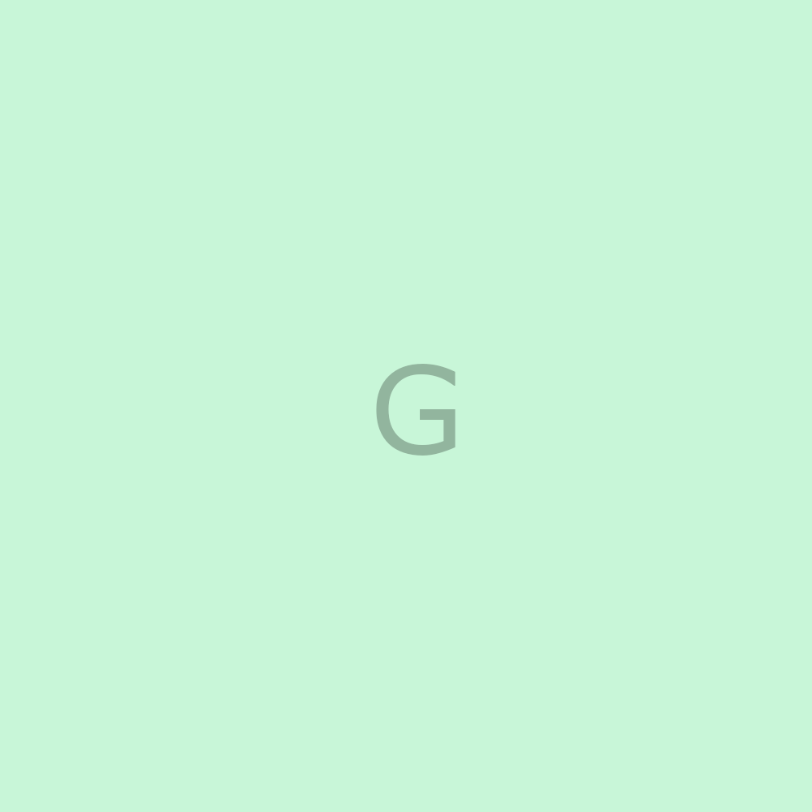

Exercício 04 Chat GPT
Neste exercício devo desenvolver os seguintes elementos abaixo
- Listas ordenadas e não ordenadas (essa já uma, inclusive)
- Listas mistas e de definição
- Links internos, externos e para download
- Imagens dinâmicas que se adpatam ao tamanho da tela
- Áudio e vídeo auto-hospedado, além de vídeo integrado do YouTube.
- CSS inline para estilizar alguns elementos
Listas Ordenadas
Destinos preferidos no Brasil
- Lençóis Maranhenses
- Boipeba
- São Miguel dos Milagres
- Urubici
- Chapada dos Veadeiros
Listas não ordenadas
Países que quero conhecer
- Itália
- China
- Camboja
- Croácia
- Marrocos
- Chile
- Costa Rica
- Islândia
- Dinamarca
Listas mistas
Países e cidades que já conheci
- Paraguai
- Ciudad del Este
- Assuncion
- Argentina
- Buenos Aires
- El Calafate
- El Chaltén
- Peru
- Estador Unidos
- Orlando
- Nova York
- Miami
- Los Angeles
- Las Vegas
- Boston
- Williams
- St. Augustine
Listas de definição
Outros países que conheci
- Portugal
- País da Europa, localizado na península ibérica
- Canadá
- País da América do Norte
- Uruguai
- País da América do Sul
- Tailândia
- País do sudeste asiático
- Laos
- País do sudeste asiático
- Vietnã
- País do sudeste asiático
- Bolívia
- País da América do Sul
Todos os tipos de links
Link interno
Neste link interno, você vai visitar outra página do meu site
Link externo
Você pode conhecer um pouco mais do meu trabalho em meu site, clicando no link.
Links para download
Você pode baixar os arquivos clicando nos links abaixo
Imagens dinâmicas que se adaptam ao tamanho da tela
A imagem abaixo deve se adaptar de acordo com o tamanho de tela em que for aberta

Inserção de vídeos
Abaixo você pode ver um vídeo auto-hospedado e em seguida um vídeo hospedado no YouTube
Inserção de áudio
Abaixo um aúdio